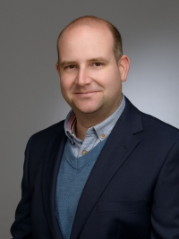

Antonio de la Vega de León
Using computer science to aid chemical research
Welcome
 Hi, I'm Antonio de la Vega de León. I am a Principal Scientist at Bristol Myers Squibb and my research focuses on novel applications of data visualization and machine learning to chemical data. I have a large amount of teaching experience in data science and chemoinformatics in my previous post as Lecturer in Chemoinformatics in the University of Sheffield. Previously, I worked as a postdoctoral researcher at the University of Sheffield, as part of a Marie Curie project against Alzheimer's disease (D3i4AD). I originally studied Biology in Madrid and decided, when I was finishing, to focus on bioinformatics. I went to Bonn to do the Life Science Informatics masters. There I was introduced into chemoinformatics by Prof. Jürgen Bajorath, with whom I did my master's thesis and then my PhD.With this website, I want to show the research I have done and that I am currently working in. You can also see the outreach events I have been involved with and also the teaching I have been involved with. The links below go to my profile in different social media from where you can get in touch with me.
ResearchGate
ORCID